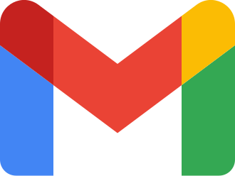
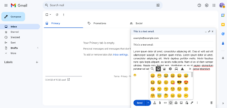
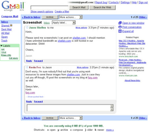
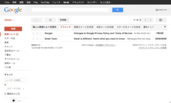
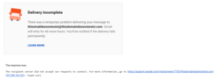
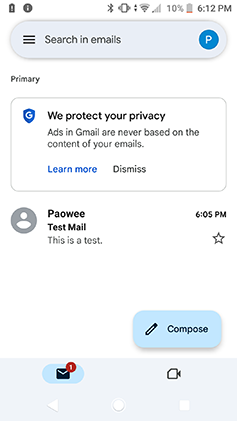
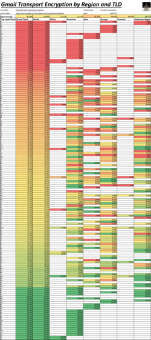
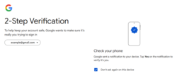

Gmail
Source: https://en.wikipedia.org/wiki/Gmail
Category: products_consumer
Depth: 1
Summary
Gmail is a mailbox provider by Google. It is the largest email service worldwide, with 1.8 billion users. It is accessible via a web browser (webmail), mobile app, or through third-party email clients via the POP and IMAP protocols. Users can also connect non-Gmail e-mail accounts to their Gmail inbox. The service was launched as Google Mail in a beta version in 2004. It came out of beta in 2009.
Images









Full Article
Email service provided by Google
Gmail is a mailbox provider by Google. It is the largest email service worldwide, with 1.8 billion users. It is accessible via a web browser (webmail), mobile app, or through third-party email clients via the POP and IMAP protocols. Users can also connect non-Gmail e-mail accounts to their Gmail inbox. The service was launched as Google Mail in a beta version in 2004. It came out of beta in 2009.
The service includes 15 gigabytes of storage for free for individual users, which includes any use by other Google services such as Google Drive and Google Photos; the limit can be increased via a paid subscription to Google One. Users can receive emails up to 50 megabytes in size, including attachments, and can send emails up to 25 megabytes in size. Gmail supports integration with Google Drive, allowing for larger attachments. The Gmail interface has a search engine and supports a "conversation view" similar to an Internet forum. The service is notable among website developers for its early adoption of Ajax.
Google's mail servers automatically scan emails to filter spam and malware.
Features
Storage
On April 1, 2004, Gmail was launched with one gigabyte (GB) of storage space, a significantly higher amount than competitors offered at the time.
The limit was doubled to two gigabytes of storage on April 1, 2005, the first anniversary of Gmail. Georges Harik, the product management director for Gmail, stated that Google would "keep giving people more space forever."
In October 2007, Gmail increased storage to 4 gigabytes, after recent changes from competitors Yahoo and Microsoft.
On April 24, 2012, Google announced the increase of storage included in Gmail from 7.5 to 10 gigabytes ("and counting") as part of the launch of Google Drive.
On May 13, 2013, Google announced the overall merge of storage across Gmail, Google Drive, and Google+ Photos, allowing users 15 gigabytes of included storage among three services.
On August 15, 2018, Google launched Google One, a service where users can pay for additional storage, shared among Gmail, Google Drive and Google Photos, through a monthly subscription plan. As of 2021[update], storage of up to 15 gigabytes is included, and paid plans are available for up to 2 terabytes for personal use.
There are also storage limits to individual Gmail messages. Initially, one message, including all attachments, could not be larger than 25 megabytes. This was changed in March 2017 to allow receiving an email of up to 50 megabytes, while the limit for sending an email stayed at 25 megabytes. In order to send larger files, users can insert files from Google Drive into the message.
Interface
Main article: Gmail interface
The Gmail user interface initially differed from other web-mail systems with its focus on search and conversation threading of emails, grouping several messages between two or more people onto a single page, an approach that was later copied by its competitors. Gmail's user interface designer, Kevin Fox, intended users to feel as if they were always on one page and just changing things on that page, rather than having to navigate to other places.
Gmail's interface also makes use of "labels" (tags) that replace conventional folders and provide a more flexible method of organizing emails; filters for automatically organizing, deleting or forwarding incoming emails to other addresses; and importance markers for automatically marking messages as 'important'.
In November 2011, Google began rolling out a redesign of its interface that "simplified" the look of Gmail into a more minimalist design to provide a more consistent look throughout its products and services as part of an overall Google design change. Substantially redesigned elements included a streamlined conversation view, configurable density of information, new higher-quality themes, a resizable navigation bar with always-visible labels and contacts, and better search. Users were able to preview the new interface design for months prior to the official release, as well as revert to the old interface, until March 2012, when Google discontinued the ability to revert and completed the transition to the new design for all users.
In May 2013, Google updated the Gmail inbox with tabs which allow the application to categorize the user's emails. The five tabs are: Primary, Social, Promotions, Updates, and Forums. In addition to customization options, the entire update can be disabled, allowing users to return to the traditional inbox structure.
In April 2018, Google introduced a new web UI for Gmail. The new redesign follows Google's Material Design, and changes in the user interface include the use of Google's Product Sans font. Other updates include a Confidential mode, which allows the sender to set an expiration date for a sensitive message or to revoke it entirely, integrated rights management and two-factor authentication.
On 16 November 2020, Google announced new settings for smart features and personalization in Gmail. Under the new settings users were given control of their data in Gmail, Chat, and Meet, offering smart features like Smart Compose and Smart Reply.
On 6 April 2021, Google rolled out Google Chat and Room (early access) feature to all Gmail users.
On 28 July 2022, Google rolled out Material You to all Gmail users.
Spam filter
Gmail's spam filtering features a community-driven system: when any user marks an email as spam, this provides information to help the system identify similar future messages for all Gmail users.
Gmail Labs
The Gmail Labs feature, introduced on June 5, 2008, allows users to test new or experimental features of Gmail. Users can enable or disable Labs features selectively and provide feedback about each of them. This allows Gmail engineers to obtain user input about new features to improve them and also to assess their popularity. Popular features, like the "Undo Send" option, often "graduate" from Gmail Labs to become a formal setting in Gmail. All Labs features are experimental and are subject to termination at any time.
Search
Gmail incorporates a search bar for searching emails. The search bar can also search contacts, files stored in Google Drive, events from Google Calendar, and Google Sites.
In May 2012, Gmail improved the search functionality to include auto-complete predictions from the user's emails.
Gmail's search functionality does not support searching for word fragments (also known as 'substring search' or partial word search). Workarounds exist.
Language support
As of March 2015[update], the Gmail interface supports 72 languages, including: Arabic, Basque, Bulgarian, Catalan, Chinese (simplified), Chinese (traditional), Croatian, Czech, Danish, Dutch, English (UK), English (US), Estonian, Finnish, French, German, Greek, Gujarati, Hebrew, Hindi, Hungarian, Icelandic, Indonesian, Italian, Japanese, Kannada, Korean, Latvian, Lithuanian, Malay, Malayalam, Marathi, Norwegian (Bokmål), Odia, Persian, Polish, Punjabi, Portuguese (Brazil), Portuguese (Portugal), Romanian, Russian, Serbian, Sinhala, Slovak, Slovenian, Spanish, Swedish, Tagalog (Filipino), Tamil, Telugu, Thai, Turkish, Ukrainian, Urdu, Vietnamese, Welsh and Zulu.
Automated error messages
If you encounter an email from Mail Delivery Subsystem, it indicates that you encountered an error when trying to email someone but it is unsuccess full. This can be because of an invalid email address, timed out email, full inbox or whatever reason.
Language input styles
In October 2012, Google added over 100 virtual keyboards, transliterations, and input method editors to Gmail, enabling users different types of input styles for different languages in an effort to help users write in languages that are not "limited by the language of your keyboard."
In October 2013, Google added handwriting input support to Gmail.
In August 2014, Gmail became the first major email provider to let users send and receive emails from addresses with accent marks and letters from outside the Latin alphabet.
Platforms
Web browsers
The modern AJAX version is officially supported in the current and previous major releases of Google Chrome, Firefox, Microsoft Edge and Safari web browsers on a rolling basis.
Gmail's "basic HTML" version works on almost all browsers. This version of Gmail has been discontinued from January 2024.
In August 2011, Google introduced Gmail Offline, an HTML5-powered app for providing access to the service while offline. Gmail Offline runs on the Google Chrome browser and can be downloaded from the Chrome Web Store.
In addition to the native apps on iOS and Android, users can access Gmail through the web browser on a mobile device.
Mobile
Gmail has native applications for iOS devices (including iPhone, iPad, and iPod Touch) and for Android devices.
In November 2014, Google introduced functionality in the Gmail Android app that enabled sending and receiving emails from non-Gmail addresses (such as Yahoo! Mail and Outlook.com) through POP or IMAP.
In November 2016, Google redesigned the Gmail app for the iOS platform, bringing the first complete visual overhaul in "nearly four years". The update added much more use of colors, sleeker transitions, and the addition of several "highly-requested" features, including Undo Send, faster search with instant results and spelling suggestions, and Swipe to Archive/Delete.
In May 2017, Google updated Gmail on Android to feature protection from phishing attacks. Media outlets noticed that the new protection was announced amid a widespread phishing attack on a combination of Gmail and Google's Docs document service that occurred on the same day.
Later in May, Google announced the addition of "Smart Reply" to Gmail on Android and iOS. "Smart Reply", a feature originally launched for Google's Inbox by Gmail service, scans a message for information and uses machine intelligence to offer three responses the user can optionally edit and send. The feature is limited to the English language at launch, with additional support for Spanish, followed by other languages arriving later.
Inbox by Gmail, another app from the Gmail team, was also available for iOS and Android devices. It was discontinued in April 2019.
Third-party programs can be used to access Gmail, using the POP or IMAP protocols. In 2019, Google rolled out dark mode for its mobile apps in Android and iOS.
Inbox by Gmail
Main article: Inbox by Gmail
In October 2014, Google introduced Inbox by Gmail on an invitation-only basis. Developed by the Gmail team, but serving as a "completely different type of inbox", the service is made to help users deal with the challenges of an active email. Citing issues such as distractions, difficulty in finding important information buried in messages, and receiving more emails than ever, Inbox by Gmail has several important differences from Gmail, including bundles that automatically sort emails of the same topic together, highlights that surface key information from messages, and reminders, assists, and snooze, that help the user in handling incoming emails at appropriate times.
Inbox by Gmail became publicly available in May 2015. In September 2018, Google announced it would end the service at the end of March 2019, most of its key features having been incorporated into the standard Gmail service. The service was discontinued on April 2, 2019.
Integration with Google products
In August 2010, Google released a plugin that provides integrated telephone service within Gmail's Google Chat interface. The feature initially lacked an official name, with Google referring to it as both "Google Voice in Gmail chat" and "Call Phones in Gmail". The service logged over one million calls in 24 hours. In March 2014, Google Voice was discontinued, and replaced with functionality from Google Hangouts, another communication platform from Google.
On February 9, 2010, Google commenced its new social networking tool, Google Buzz, which integrated with Gmail, allowing users to share links and media, as well as status updates. Google Buzz was discontinued in October 2011, replaced with new functionality in Google+, Google's then-new social networking platform.
Gmail was integrated with Google+ in December 2011, as part of an effort to have all Google information across one Google account, with a centralized Google+ user profile. Backlash from the move caused Google to step back and remove the requirement of a Google+ user account, keeping only a private Google account without a public-facing profile, starting in July 2015.
In May 2013, Google announced the integration between Google Wallet and Gmail, which would allow Gmail users to send money as email attachments. Although the sender must use a Gmail account, the recipient does not need to be using a Gmail address. The feature has no transaction fees, but there are limits to the amount of money that can be sent. Initially only available on the web, the feature was expanded to the Android app in March 2017, for people living in the United States.
In September 2016, Google released Google Trips, an app that, based on information from a user's Gmail messages, automatically generates travel cards. A travel card contains itinerary details, such as plane tickets and car rentals, and recommends activities, food and drinks, and attractions based on location, time, and interests. The app also has offline functionality. In April 2017, Google Trips received an update adding several significant features. The app now also scans Gmail for bus and train tickets, and allows users to manually input trip reservations. Users can send trip details to other users' email, and if the recipient also has Google Trips, the information will be automatically available in their apps as well.
Security
History
Google has supported the secure HTTPS since the day it launched. In the beginning, it was only default on the login page, a reason that Google engineer Ariel Rideout stated was because HTTPS made "your mail slower". However, users could manually switch to secure HTTPS mode inside the inbox after logging in. In July 2008, Google simplified the ability to manually enable secure mode, with a toggle in the settings menu.
In 2007, Google fixed a cross-site scripting security issue that could let attackers collect information from Gmail contact lists.
In January 2010, Google began rolling out HTTPS as the default for all users.
In June 2012, a new security feature was introduced to protect users from state-sponsored attacks. A banner will appear at the top of the page that warns users of an unauthorized account compromise.
In March 2014, Google announced that an encrypted HTTPS connection would be used for the sending and receiving of all Gmail emails, and "every single email message you send or receive —100% of them —is encrypted while moving internally" through the company's systems.
Whenever possible, Gmail uses transport layer security (TLS) to automatically encrypt emails sent and received. On the web and on Android devices, users can check if a message is encrypted by checking if the message has a closed or open red padlock.
Gmail automatically scans all incoming and outgoing e-mails for viruses in email attachments. For security reasons, some file types, including executables, are not allowed to be sent in emails.
At the end of May 2017, Google announced that it had applied machine learning technology to identify emails with phishing and spam, having a 99.9% detection accuracy. The company also announced that Gmail would selectively delay some messages, approximately 0.05% of all, to perform more detailed analysis and aggregate details to improve its algorithms.
In November 2020, Google started adding click-time link protection by redirecting clicked links to Google in official Gmail clients.
Third-party encryption in transit
In Google's Transparency Report under the Safer email section, it provides information on the percentage of emails encrypted in transit between Gmail and third-party email providers.
Two-step verification
Gmail supports two-step verification, an optional additional measure for users to protect their accounts when logging in.
Once 2-Step Verification (2SV) is enabled, logging in from a new device requires an additional verification method, even after the username and password have been entered. These methods, which verify the user's identity, can include responding to a push notification on the user's Android/iOS device, entering a code generated by the Google Authenticator smartphone app, or inserting a physical security key into the computer's USB port."
Using a security key for two-step verification was made available as an option in October 2014.
24-hour lockdowns
If an algorithm detects what Google calls "abnormal usage that may indicate that your account has been compromised", the account can be automatically locked down for between one minute and 24 hours, depending on the type of activity detected. Listed reasons for a lock-down include:
- Receiving, deleting, or downloading large amounts of mail from POP/IMAP client within a short period of time.
- Sending a large number of messages which fail to deliver.
- Using software which automatically logs into one's account.
- Leaving multiple instances of Gmail open.
Anti-child pornography policy
Google combats child pornography through Gmail's servers in conjunction with the National Center for Missing & Exploited Children (NCMEC) to find children suffering abuse around the world. In collaboration with the NCMEC, Google creates a database of child pornography pictures. Each one of the images is given a unique numerical number known as a hash. Google then scans Gmail looking for the unique hashes. When suspicious images are located, Google reports the incident to the appropriate national authorities.
History
Main article: History of Gmail
The idea for Gmail was developed by Paul Buchheit several years before it was announced to the public. The project was known by the code name Caribou. During early development, the project was kept secret from most of Google's own engineers. This changed once the project improved, and by early 2004, most employees were using it to access the company's internal email system.
Gmail was announced to the public by Google on April 1, 2004, as a limited beta release.
In November 2006, Google began offering a Java-based application of Gmail for mobile phones.
In October 2007, Google began a process of rewriting parts of the code that Gmail used, which would make the service faster and add new features, such as custom keyboard shortcuts and the ability to bookmark specific messages and email searches. Gmail also added IMAP support in October 2007. An update around January 2008 changed elements of Gmail's use of JavaScript, and resulted in the failure of a third-party script some users had been using. Google acknowledged the issue and helped users with workarounds.
Gmail exited beta status on July 7, 2009.
Prior to December 2013, users had to approve to see images in emails, which acted as a security measure. This changed in December 2013, when Google, citing improved image handling, enabled images to be visible without user approval. Images are now routed through Google's secure proxy servers rather than the original external host servers. MarketingLand noted that the change to image handling means email marketers will no longer be able to track the recipient's IP address or information about what kind of device the recipient is using. However, Wired stated that the new change means senders can track the time when an email is first opened, as the initial loading of the images requires the system to make a "callback" to the original server.
Growth
In June 2012, Google announced that Gmail had 425 million active users globally. In May 2015, Google announced that Gmail had 900 million active users, 75% of whom were using the service on mobile devices. In February 2016, Google announced that Gmail had passed 1 billion active users. In July 2017, Google announced that Gmail had passed 1.2 billion active users.
In the business sector, Quartz reported in August 2014 that, among 150 companies checked in three major categories in the United States (Fortune 50 largest companies, mid-size tech and media companies, and startup companies from the last Y Combinator incubator class), only one Fortune 50 company used Gmail – Google itself – while 60% of mid-sized companies and 92% of startup companies were using Gmail.
In May 2014, Gmail became the first app on the Google Play Store to hit one billion installations on Android devices.
Gamil Design company and misspellings
Before the introduction of Gmail, the website of product and graphic design from Gamil Design in Raleigh, North Carolina, received 3,000 hits per month. In May 2004, a Google engineer who had accidentally gone to the Gamil site a number of times contacted the company and asked if the site had experienced an increase in traffic. In fact, the site's activity had doubled. Two years later, with 600,000 hits per month, the Internet service provider wanted to charge more, and Gamil posted the message on its site "You may have arrived here by misspelling Gmail. We understand. Typing fast is not our strongest skill. But since you've typed your way here, let's share."
Google Workspace
Main article: Google Workspace
As part of Google Workspace (formerly G Suite), Google's business-focused offering, Gmail comes with additional features, including:
- Email addresses with the customer's domain name (@yourcompany.com)
- 99.9% guaranteed uptime with zero scheduled downtime for maintenance
- Either 30 GB or unlimited storage shared with Google Drive, depending on the plan
- 24/7 phone and email support
- Synchronization compatibility with Microsoft Outlook and other email providers
- Support for add-ons that integrate third-party apps purchased from the Google Workspace Marketplace with Gmail
Criticism
See also: Criticism of Google
Privacy
Main article: Privacy concerns with Google
Google has one privacy policy that covers all of its services. Google claims that they "will not target ads based on sensitive information, such as race, religion, sexual orientation, health, or sensitive financial categories."
Automated scanning of email content
Google's mail servers automatically scan emails for multiple purposes, including filtering spam and malware, and (until 2017) adding context-sensitive advertisements next to emails.
Privacy advocates raised concerns about this practice; concerns included that allowing email content to be read by a machine (as opposed to a person) can allow Google to keep unlimited amounts of information forever; the automated background scanning of data raises the risk that the expectation of privacy in email usage will be reduced or eroded; information collected from emails could be retained by Google for years after its current relevancy to build complete profiles on users; emails sent by users from other email providers get scanned despite never having agreed to Google's privacy policy or terms of service; Google can change its privacy policy unilaterally, and for minor changes to the policy it can do so without informing users; in court cases, governments and organizations can potentially find it easier to legally monitor email communications; at any time, Google can change its current company policies to allow combining information from emails with data gathered from use of its other services; and any internal security problem on Google's systems can potentially expose many – or all – of its users.
In 2004, thirty-one privacy and civil liberties organizations wrote a letter calling upon Google to suspend its Gmail service until the privacy issues were adequately addressed. The letter also called upon Google to clarify its written information policies regarding data retention and data sharing among its business units. The organizations also voiced their concerns about Google's plan to scan the text of all incoming messages for the purposes of ad placement, noting that the scanning of confidential email for inserting third-party ad content violates the implicit trust of an email service provider.
On June 23, 2017, Google announced that, later in 2017, it would phase out the scanning of email content to generate contextual advertising, relying on personal data collected through other Google services instead. The company stated that this change was meant to clarify its practices and quell concerns among enterprise G Suite (now Google Workspace) customers who felt an ambiguous distinction between the free consumer and paid professional variants, the latter being advertising-free.
Lawsuits
In March 2011, a former Gmail user in Texas sued Google, claiming that its Gmail service violates users' privacy by scanning e-mail messages to serve relevant ads.
In July 2012, some California residents filed two class action lawsuits against Google and Yahoo!, claiming that they illegally intercept emails sent by individual non-Gmail or non-Yahoo! email users to Gmail and Yahoo! recipients without the senders' knowledge, consent or permission. A motion filed by Google's attorneys in the case concedes that Gmail users have "no expectation of privacy".
A court filing uncovered by advocacy group Consumer Watchdog in August 2013 revealed that Google stated in a court filing that no "reasonable expectation" exists among Gmail users in regard to the assured confidentiality of their emails. In response to a lawsuit filed in May 2013, Google explained:
"All users of email must necessarily expect that their emails will be subject to automated processing. Just as a sender of a letter to a business colleague cannot be surprised that the recipient's assistant opens the letter, people who use web-based email today cannot be surprised if their communications are processed by the recipient's ECS [electronic communications service] provider in the course of delivery.
A Google spokesperson stated to the media on August 15, 2013, that the corporation takes the privacy and security concerns of Gmail users "very seriously".
April 2014 Terms of service update
Google updated its terms of service for Gmail in April 2014 to create full transparency for its users in regard to the scanning of email content. The relevant revision states: "Our automated systems analyze your content (including emails) to provide you personally relevant product features, such as customized search results, tailored advertising, and spam and malware detection. This analysis occurs as the content is sent, received, and when it is stored." A Google spokesperson explained that the corporation wishes for its policies "to be simple and easy for users to understand."
In response to the update, Jim Killock, executive director of the Open Rights Group, stated: "The really dangerous things that Google is doing are things like the information held in Analytics, cookies in advertising and the profiling that it is able to do on individual accounts".
Microsoft ad campaign against Google
In 2013, Microsoft launched an advertising campaign to attack Google for scanning email messages, arguing that most consumers are not aware that Google monitors their personal messages to deliver targeted ads. Microsoft claims that its email service Outlook does not scan the contents of messages and a Microsoft spokesperson called the issue of privacy "Google's kryptonite". In response, Google stated; "We work hard to make sure that ads are safe, unobtrusive and relevant ... No humans read your e-mail or Google Account information in order to show you advertisements or related information. An automated algorithm — similar to that used for features like Priority Inbox or spam filtering — determines which ads are shown." The New York Times cites "Google supporters", who say that "Microsoft's ads are distasteful, the last resort of a company that has been unsuccessful at competing against Google on the more noble battleground of products".
Other privacy issues
2010 attack from China
In January 2010, Google detected a "highly sophisticated" cyberattack on its infrastructure that originated from China. The targets of the attack were Chinese human rights activists, but Google discovered that accounts belonging to European, American and Chinese activists for human rights in China had been "routinely accessed by third parties". Additionally, Google stated that their investigation revealed that "at least" 20 other large companies from a "wide range of businesses" - including the Internet, finance, technology, media and chemical sectors – had been similarly targeted. Google was in the process of notifying those companies and it had also worked with relevant US authorities. In light of the attacks, Google enhanced the security and architecture of its infrastructure, and advised individual users to install anti-virus and anti-spyware on their computers, update their operating systems and web browsers, and be cautious when clicking on Internet links or when sharing personal information in instant messages and emails.
Social network integration
The February 2010 launch of Google Buzz, a now defunct social network linked to Gmail, immediately drew criticism for publicly sharing details of users' contacts unless the default settings were changed. A new Gmail feature was launched in January 2014, whereby users could email people with Google+ accounts even though they do not know the email address of the recipient. Marc Rotenberg, President of the Electronic Privacy Information Center, called the feature "troubling", and compared it to the initial privacy flaw of Google Buzz's launch.
Update to DoubleClick privacy policy
In June 2016, Julia Angwin of ProPublica wrote about Google's updated privacy policy, which deleted a clause that had stated Google would not combine DoubleClick web browsing cookie information with personally identifiable information from its other services. This change has allowed Google to merge users' personally identifiable information from different Google services to create one unified ad profile for each user. After publication of the article, Google reached out to ProPublica to say that the merge would not include Gmail keywords in ad targeting.
Outages
Gmail suffered at least seven outages in 2009, causing doubts about the reliability of its service. It suffered a new outage on February 28, 2011, in which a bug caused Gmail accounts to seem empty. Google stated in a blog post that "email was never lost" and restoration was in progress. Other outages occurred on April 17, 2012, September 24, 2013, January 24, 2014, January 29, 2019 and August 20, 2020.
Google has stated that "Gmail remains more than 99.9% available to all users, and we're committed to keeping events like [the 2009 outage] notable for their rarity."
"On behalf of" tag
In May 2009, Farhad Manjoo wrote on The New York Times blog about Gmail's "on behalf of" tag. Manjoo explained: "The problems [sic] is, when you try to send outbound mail from your Gmail universal inbox, Gmail adds a tag telling your recipients that you're actually using Gmail and not your office e-mail. If your recipient is using Microsoft Outlook, he'll see a message like, 'From youroffice@domain.com on behalf of yourgmail@gmail.com.'" Manjoo further wrote that "Google explains that it adds the tag in order to prevent your e-mail from being considered spam by your recipient; the theory is that if the e-mail is honest about its origins, it shouldn't arouse suspicion by spam checking software". The following July, Google announced a new option that would remove the "On behalf of" tag, by sending the email from the server of the other email address instead of using Gmail's servers.
See also
Notes
References
External links
Gmail at Wikipedia's sister projects
 Media from Commons
Media from Commons Quotations from Wikiquote
Quotations from Wikiquote-
 Textbooks from Wikibooks
Textbooks from Wikibooks - Official Website for Gmail for Work
- Gmail official mobile site (multi-language)
- Gmail at britannica.com
| - v - t - e Google | |
|---|---|
| a subsidiary of Alphabet | |
| Company | |
| Development | |
| Software | |
| Hardware | |
| - v - t - e Litigation | |
| Related | |
| Italics denote discontinued products. - Category - Outline |
| Authority control databases Edit this at Wikidata | |
|---|---|
| International | - VIAF - GND |
| National | - United States - Israel |